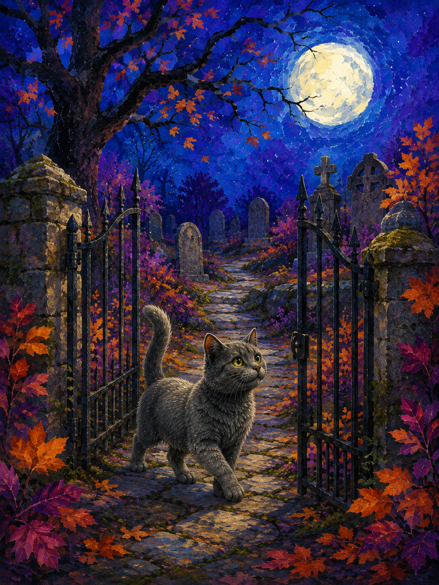
The little grey cat had never been to the cemetery before.
It was a quiet place, with old trees, winding paths and stones covered in moss.
The little grey cat liked quiet places.
So it went in.
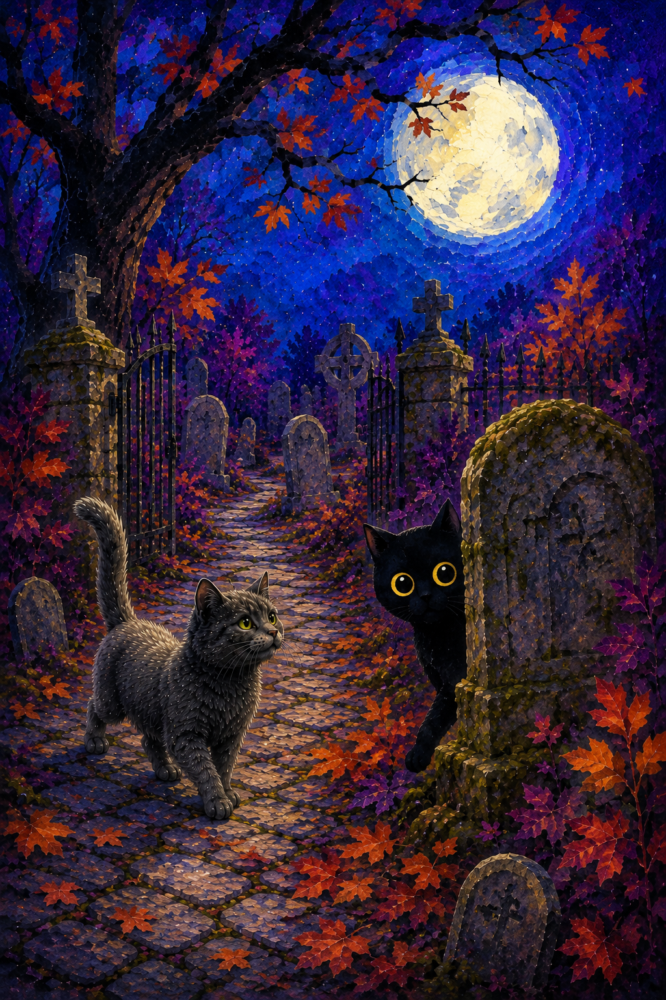
The cemetery was not quite as empty as it seemed.
From behind an old gravestone, two bright yellow eyes were watching.
The little grey cat stopped.
The eyes blinked.
Then a black cat stepped quietly into the path.
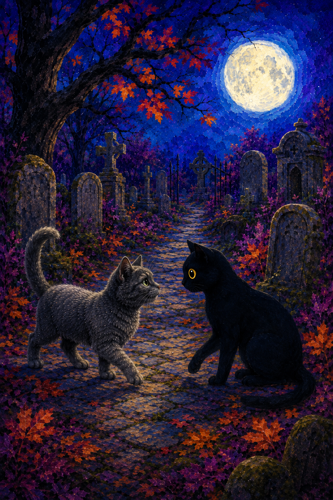
The black cat did not run away.
It sat and watched.
The little grey cat took one careful step closer.
The black cat took one careful step too.
Neither of them meowed.
Somehow, that felt like hello.
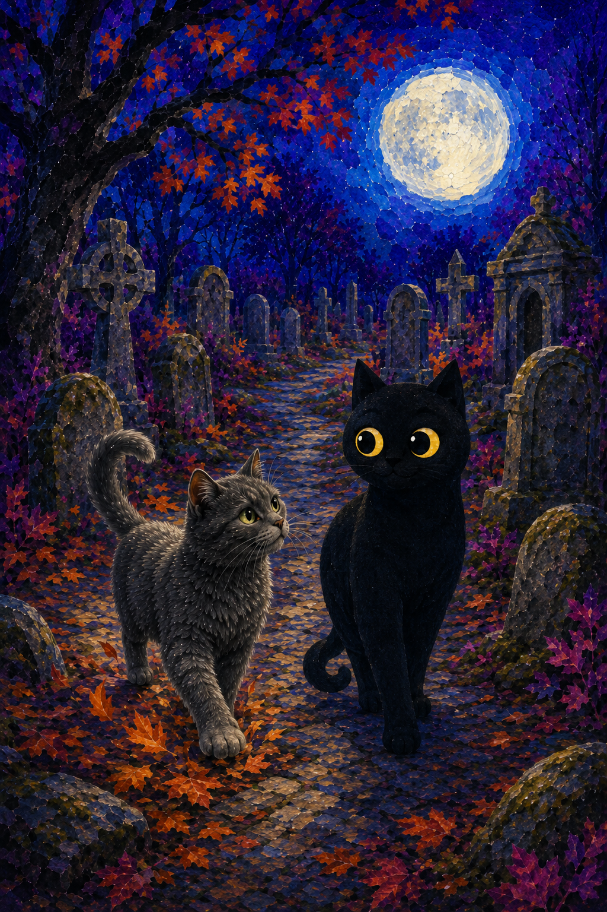
The two cats walked together between the old stones.
The little grey cat heard its own paws crunching through the fallen leaves.
But beside it, there was no sound at all.
The little grey cat looked over.
The black cat just smiled.
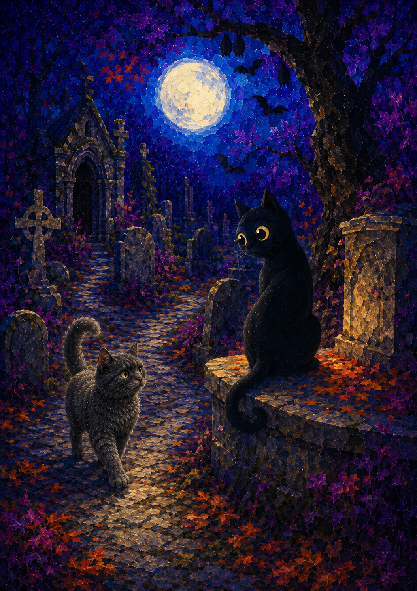
The black cat knew every corner of the cemetery.
It knew the coldest gravestone to lie on when the moon came out.
It knew where the bats roosted in the cemetery.
It knew which path stayed dry after the rain.
The little grey cat followed.
“You’ve been here a long time,” it thought.
The black cat looked back.
A very long time.
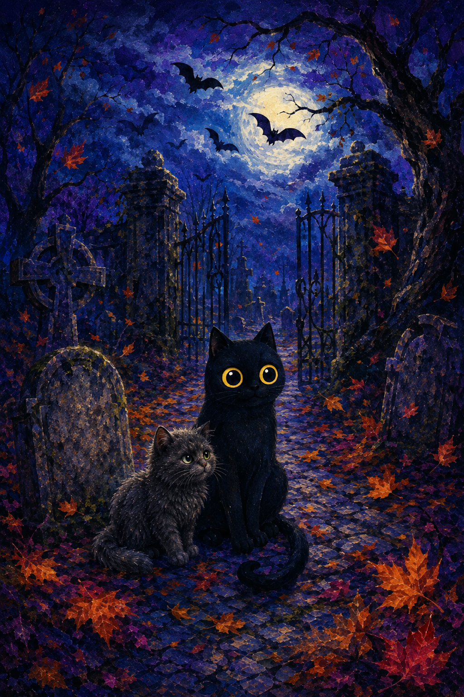
A cold wind moved through the cemetery.
The trees creaked.
The bats fluttered above the old stones.
Somewhere in the dark, a gate gave a slow, squeaky groan.
The little grey cat moved a little closer to the black cat.
The black cat did not seem frightened.
It looked almost at home.

The moon slipped behind a cloud.
For a moment, the cemetery turned almost black.
The little grey cat looked beside it.
The black cat was gone.
Then—two yellow eyes appeared on the other side of the path.
The little grey cat jumped.
The black cat only blinked.
It had not made a sound.
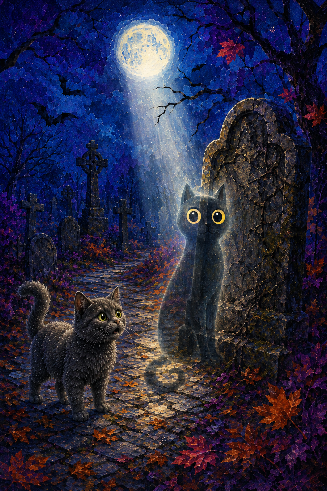
The little grey cat hurried after its friend.
The path twisted between the old graves.
The wind whispered through the trees.
Somewhere nearby, something scratched against stone.
The little grey cat stopped.
“Oh.”
The black cat was standing beside a very old gravestone.
Then the moonlight passed through it.
The little grey cat stared.
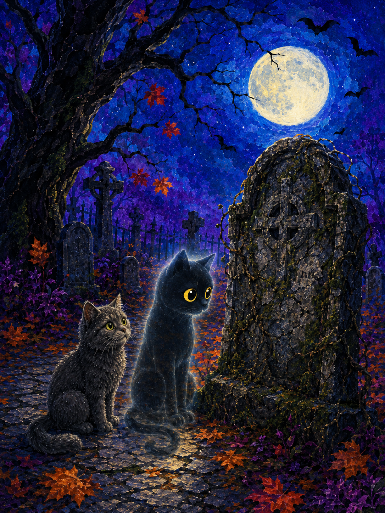
The little grey cat did not run away.
It sat beside the black cat beneath the old tree.
“Why are you still here?” it wondered.
The black cat looked toward one very old gravestone.
For a moment, the wind stopped.
Even the bats were quiet.
The black cat lowered its head.
It was waiting for someone who had been gone a very long time.
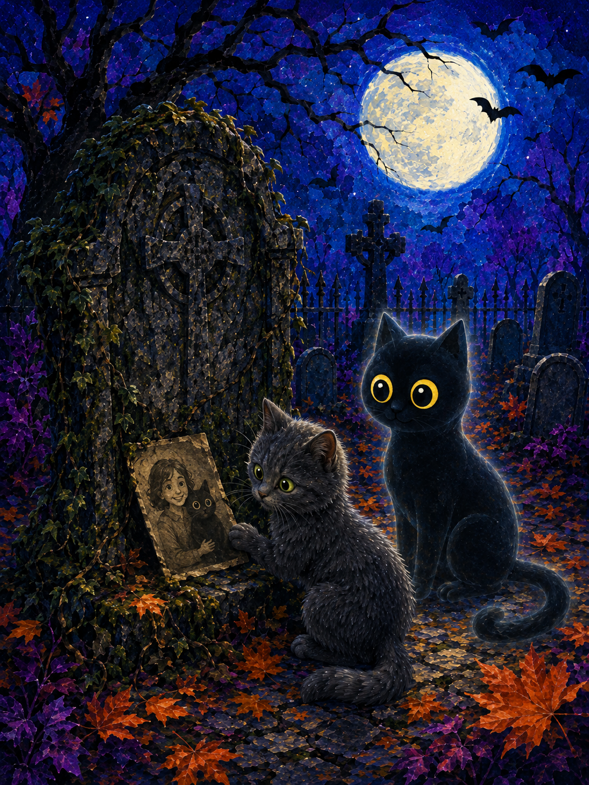
The little grey cat looked at the old gravestone.
Something was tucked beneath the ivy.
A faded photograph.
The little grey cat pulled it free.
In the picture, a smiling person sat beneath a tree.
And beside them was a black cat with the very same yellow eyes.
The little grey cat looked at the photograph.
Then at its friend.
The black cat did not need to explain.
Now the little grey cat understood.
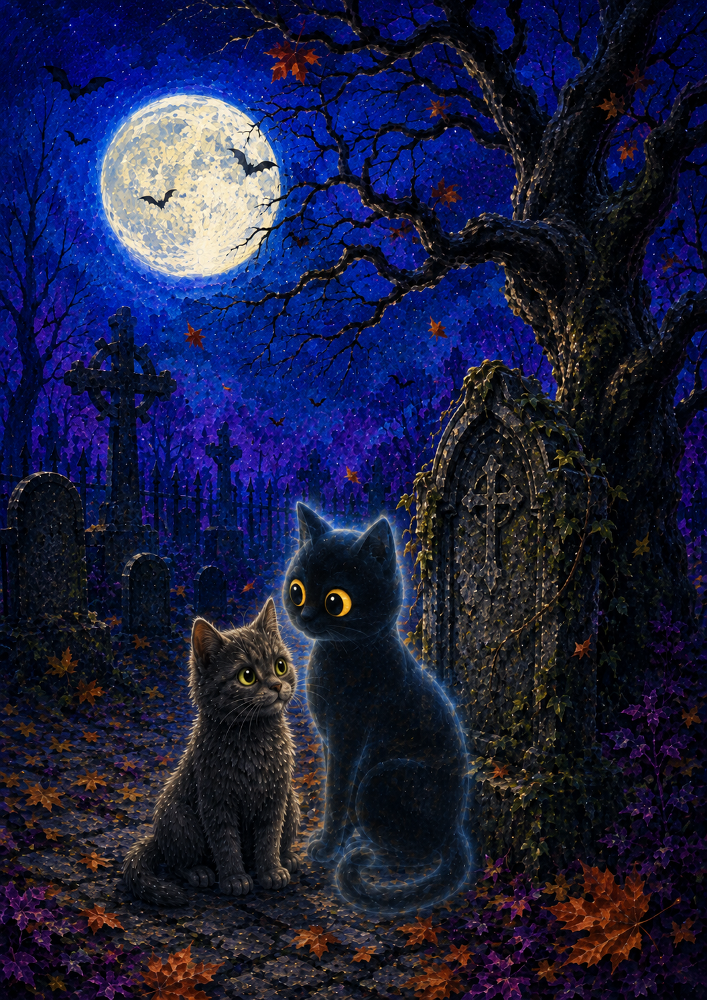
The cemetery grew very still.
The bats disappeared into the dark.
The wind stopped moving the leaves.
Even the old gate was silent.
The little grey cat sat beside its friend.
The black cat looked up at the moon.
“I think it’s nearly time,” it said.
The little grey cat did not ask where it was going.
Some questions already have an answer.
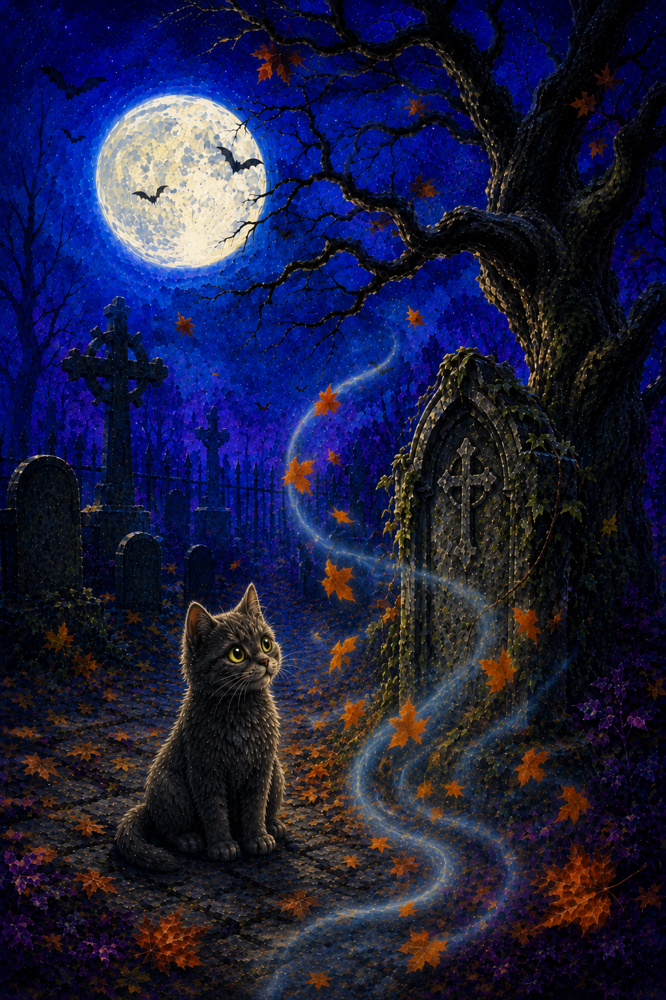
A cloud drifted across the moon.
The cemetery turned dark.
The little grey cat blinked.
For one moment, the black cat was there.
Then the wind lifted a swirl of orange leaves.
When they fell, the black cat was gone.
The little grey cat sat very still.
But it was not afraid.
Some friends leave quietly.
Some memories never do.
Something to think about
Can someone remain important to us even when we do not see them anymore?